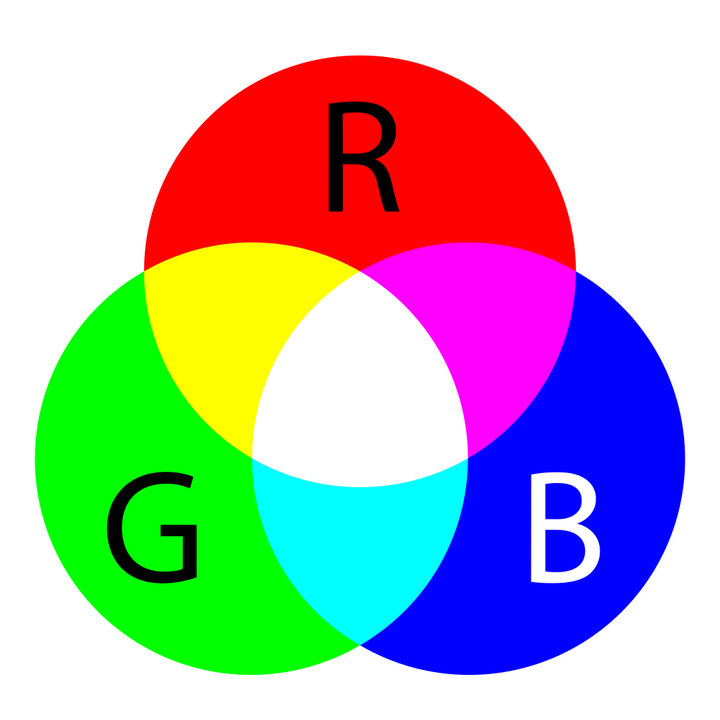

-Podemos añadir un fondo de color, para ello lo tenemos que hacer dentro de la etiqueta "body". “Ej: background-color: blue” (Background significa fondo.)
-Para añadir color a un texto lo ponemos dentro de la etiqueta font. Ej: font color="white"

RGB
-El RGB es el tratamiento de la señal de vídeo que trata por separado las señales de los tres colores rojo, verde y azul. Al usarlo independientemente, proporciona mayor calidad y reproducción más fiel del color.
Como utilizar Alpha
Hay que tener claro que Alpha hace referencia a la opacidad de este. 0 sería totalmente transparente, 1 sería totalmente opaco y 0.5 sería una transparencia al 50% Ejemplo: rgba(255, 125, 0, 0.5)